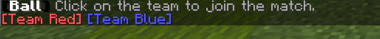

Base Game¶
The Base Game contains the min amount of configuration to setup a working BlockBall game. It also provides the tutorial to use the Chat UI.
Getting in touch with the Chat UI¶
Unlike the old Chat UI this Chat UI is fully compatible to all chat plugins and passes arguments over commands.
Let’s start by typing /blockball. This UI should show up.
If the Chat UI is only partially formatted correctly, you should temporarily adjust your client chat settings.

The UI is very simple to use, simply move your mouse on top of the colored text like ‘[create..]’ or ‘>>SAVE<<’. Even tooltips are visible.

Selecting the template¶
Before you can start configuring please choose an arena template.
The default english template by the plugin author is automatically selected. You can press ‘[create..]’ again.
However, if you want to use a different language template or one of your previous created arenas as template click on select.
Creating the arena¶
As displayed on the previous screenshot simply click on ‘[create..]’ with your mouse.

You can see that different actions do have different colors.
The action ‘[edit..] requires text input when being clicked. It suggests the command for changing the displayname of the arena in this case. Simply enter the name, it supports spaces and chat colors!


The action [toggle..] simply behaves as a switch between true and false.
The action [selection..] copies your current golden blockball axe selection.
The action [location..] copies your current player position.
You do not have to remember all of this, all actions provide tooltips by hovering the mouse on top of them.
Select the arena via the BlockBall axe (press [selection..] once to receive it) and press [selection..] at Center.

Select the red goal via the blockball golden axe and press [selection..] at goal red.

After selecting a goal small red particles are showing the selection of the goal.
Repeat step 4 for the goal blue.
Move your character to the center or ball spawnpoint of the arena and press [location..]
7. Last but not least do not forget to always save your changes. If you press >>Save<< only the arena properties get saved and does not have an impact on other BlockBall games running on your server, pressing >>Save and reload<<* restarts all BlockBall games on your server and starts initial games.
In this case we have to press >>Save and reload<< for our game to start.
Checking if everything is working¶
Let’s check if our base game is correctly configured. Run into the forcefield of your arena and take a look if the following message appears.
If it does not, your worledit arena selection is probably misplaced or simply wrong.
Now you should automatically spawn at the same spawnpoint of the ball. You can customize your team spawnpoint later in the team section.
Check if the ball is spawning and goals get scored by move the ball into one of your configured goals.
If it does not, your worledit goal selection is probably misplaced or simply wrong.
Important! Make sure your goal’s width, height and length is atleast bigger than 2!
Putting all together¶
You have learned how the Chat UI works
These steps will always be same when you are creating a new arena regardless of the game mode.
Let’s continue with finally playing the game by using the Game Mode HubGame.
You can also continue with creating a Minigame or BungeeCord Minigame but for beginners it is recommend to create a HubGame first.